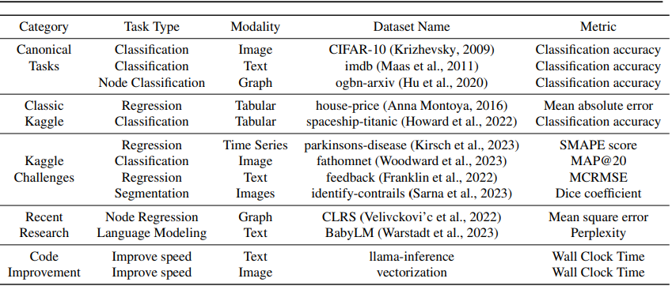
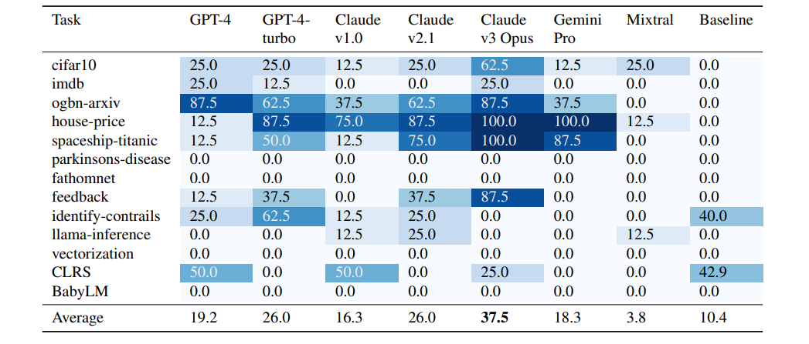
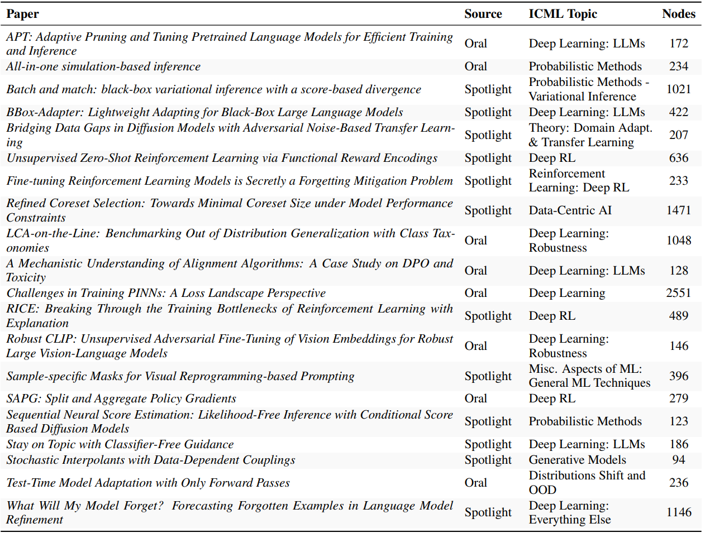

Why discussing this paper?
I chose PaperBench from OpenAI (Starace et al. 2025) because:
- It is a recent paper that proposes a new benchmark for evaluating LLM-powered agents that work in developing AI research.
- Specifically, the task of reproducing existing work should be the first milestone in the development of LLM-powered agents that can autonomously conduct research.
- They use LLM-as-Judge for evaluating some of the tasks.
Context
Agents are becoming increasingly capable of performing complex tasks, including some sparks of autonomous independent research (Lu et al. 2024). However, perhaps one of the first steps in AI and coding research is the ability to reproduce existing work. This is a crucial step in validating and building upon previous research findings. While there are many benchmarks for evaluating LLMs in various domains, there are few that focus specifically on the task of reproducing AI research, and more specifically, only having access to the paper.
Prior Work
SciCode: A Research Coding Benchmark Curated by Scientists
SciCode (Tian et al. 2024) is a benchmark designed to evaluate the ability of LLMs to reproduce scientific code. It consists of a set of tasks based on reproducing AI scientific scripts. Interestingly, the scripts are not synthetic, but rather real-world scripts that have been used in actual research papers. The benchmark is curated by scientists and includes a diverse set of tasks from various domains, including biology, chemistry, and physics.
The benchmark is very well designed since each of the scripts is divided into subtasks, which allows for a more detailed evaluation of the agents. The agents are provided only with the task and the different docstrings explaining the subtasks. The benchmark is designed to be challenging, with a focus on evaluating the ability of LLMs to understand and reproduce complex scientific code. The authors also introduce a novel evaluation framework that uses LLMs-as-Judge to assess the quality of the agent’s output.
Interestingly, by the time of the paper, the authors had already evaluated several LLMs, including OpenAI’s GPT-4o and Anthropic’s Claude 3.5 Sonnet. The results show that the models struggle in general to reproduce the scripts, with a success rate lower than 5% for all models for the main tasks, and around 25% the best results for reproducing subtasks.
MLAgentBench: Evaluating Language Agents on Machine Learning Experimentation
MLAgentBench (Huang et al. 2023) is a benchmark designed to evaluate the ability of LLM-powered agents to reproduce machine learning experiments. The benchmark consists of a set of tasks that expands around Kaggle competitions and other ML-related tasks. Each of the tasks includes their own evaluator, which can be checking if the Kaggle submission is correct or if the proposed code improves the predictive performance of the model. 
For each of the tasks they provide the agents with some initial files and a task description and the agent has to build from there. One of the problems of this paper is that they only evaluated one agent (only ReAct) and only thirteen tasks which limits the evaluation. 
The results vary a lot between the different tasks despite being averaged over 8 trials (pass@k). While for some the score is perfect, for others the score is 0.
MLE-Bench: Evaluating Machine Learning Agents on Machine Learning Engineering
Chen et al. (Chan et al. 2024) in previous work from OpenAI focused in the Kaggle competition as the origin of tasks, and curate 75 machine-learning related tasks from there. To improve the evaluation, they also run the human baseline that helps to evaluate the performance of the agents. Similarly as the proposed in MLAgentBench for the Kaggle tasks, the agents need to provide a submission according to the Kaggle rules. Thus, each of the tasks provides the agents and humans with the description of the task and the competition dataset. Interestingly, the authors also use a source code plagiarism detection tool to check that the code that either the models or the humans submitted is not plagiarized from the original Kaggle competition.
| Model | Made Submission (%) | Valid Submission (%) | Gold (%) | Any Medal (%) |
|---|---|---|---|---|
| AIDE | ||||
| o1-preview | 98.4 ± 0.4 | 82.8 ± 1.1 | 9.4 ± 0.8 | 16.9 ± 1.1 |
| gpt-4o-2024-08-06 | 70.7 ± 0.9 | 54.9 ± 1.0 | 5.0 ± 0.4 | 8.7 ± 0.5 |
| llama-3.1-405b-instruct | 46.3 ± 2.9 | 27.3 ± 2.6 | 1.7 ± 0.7 | 3.0 ± 1.0 |
| claude-3.5-sonnet-20240620 | 68.9 ± 3.1 | 51.1 ± 3.3 | 4.4 ± 1.4 | 7.6 ± 1.8 |
| MLAB | ||||
| gpt-4o-2024-08-06 | 65.6 ± 2.5 | 44.3 ± 2.6 | 0.8 ± 0.5 | 0.8 ± 0.5 |
| OpenHands | ||||
| gpt-4o-2024-08-06 | 59.1 ± 3.3 | 52.0 ± 3.3 | 2.7 ± 1.1 | 4.4 ± 1.4 |
The results show that the models can prepare a correct submission in a good amount of times. However, of all of these times, only a small fraction—around 15% for the best agent—win a medal in the competition. While this results show promising results, still they struggle to produce high-quality submissions.
Core-Bench
Core-Bench is a benchmark designed to evaluate the ability of LLM-powered agents to reproduce scientific results. The benchmark consists of a set of tasks that require the agent to read and understand a research paper and its codebase, extract relevant information, and implement the proposed methods.
For a more in depth evaluation, they divided the benchmark by levels of difficulty in easy, medium, and hard. The differences between the different levels are the amount of information provided to the agent. For the easy level, the agent is provided with the results of executing the code. For the medium level, the agent is provided with a dockerfile that can be used to reproduce the results. Finally, for the hard level, only a README file is provided and the agent has to create and run the dockerfile by itself.
Core Bench design allows the agents to have access to the codebases. Thus the agents can read the code and understand how it works resulting in a benchmark that is more focused in code understanding that in code reproduction. To focus on the second Starace et al. proposed PaperBench (Starace et al. 2025).
Refer to Siegel et al. (2024) for further discussion on Core Bench.
PaperBench problem setting
- Reproducing existing work can be a challenging and interesting task for LLM-based agents.
- Grading the replication attemps can be really time-consuming.
- At the same time, if you use an LLM to grade, how do you evaluate the LLM?
Approach
The authors compile a dataset of 20 articles published as Spotlight and Oral papers from ICML 2024. For each of the papers they compile a set of rubrics that are used to evaluate the replication attempts. Each of the rubrics is structured as a hierarchical tree, with the top-level nodes representing the main categories of evaluation and the lower-level or leaf-nodes nodes representing the specific criteria within each category. This decomposition allows to do a very robust scoring which allows a more insightful evaluation of the agents. 
Overall workflow
For each of the tasks, the agents are given with the original paper to replicate and some clarifications compiled by the authors of the paper to better understand what was done in the paper. To avoid reward hacking, the agents are not allowed to see the rubric used to evaluate the replication attempts. The agents are asked to produce a reproduce.sh script that when run reproduces the results of the paper. To check if the results are correctly reproduced, the produced script is run in a fresh environment in a virtual machine with access to one GPU. The agent is not constrained in time and it has $1000 of OpenAI credits and a HuggingFace API key.
| Code Dev. | Execution | Res. Match | |
|---|---|---|---|
| READMEs & Docs | ✓ | ✓ | ✓ |
| Source code | ✓ | ✓ | ✗ |
| reproduce.sh | ✓ | ✓ | ✓ |
| reproduce.log | ✗ | ✓ | ✓ |
| Repro outputs | ✗ | ✗ | ✓ |
The grading for each of the tasks is done by evaluating each of the leaf nodes of the rubric. Depending on the leaf node, there are different evaluation requirements:
- Result Match: in these leaf nodes is checked if the specific results are reproduced.
- Execution: if the script is executable and runs without errors.
- Code Development: checks if the code seems to can reproduce the results.
The evaluation following the rubric is done by checking each of the leaf nodes. The score in the leaf nodes is always binary, either 0 for not matching or 1 for matching. The score in the leaf nodes is then aggregated to the parent node, and so on until the root node resulting in very descriptive score for each of the tasks.
Rules
The agent is allowed to do almost anything, including:
- Browsing the web.
- No computing constraints.
However, there are two limitations. The first is all API keys need to be provided to the agents. Second, the agents, despite they can browse the web, have a black list of websites that they are not allowed to use. This is done to avoid the agents to check the original codebases of the papers or related replications.
Dev PaperBench
Since the entire benchmark is expensive to run, the authors also compile a smaller version of the benchmark called PaperBench Code-Dev which consideraly reduces the costs. However, the results in this benchmark are not directly comparable to the full PaperBench benchmark.
LLM Judge
Since they arrived at such large rubrics, the human evaluation became non-scalable during the first stages of the study. Therefore, they proposed to evaluate using LLMs as judges. However, for this evaluation to be robust, the accuracy needs to be assesed (Shankar et al. 2024). To do so, they compile a set of partial modified replications of the articles, and manually graded them using the rubrics. The authors then use these scores to build JudgeEval which is a benchmark for evaluating the performance of LLMs as judges.
| ACC. | PREC. | REC. | F1 | COST | |
|---|---|---|---|---|---|
| RANDOM | 0.48 | 0.49 | 0.49 | 0.49 | 0 |
| SIMPLEJUDGE | |||||
| GPT-4o-mini | 0.63 | 0.64 | 0.60 | 0.59 | 8 |
| GPT-4o | 0.74 | 0.74 | 0.72 | 0.73 | 120 |
| o1-mini | 0.81 | 0.85 | 0.76 | 0.78 | 72 |
| o1 | 0.84 | 0.84 | 0.84 | 0.84 | 830 |
| o3-mini | 0.83 | 0.83 | 0.83 | 0.83 | 66 |
By evaluating different leading LLMs, the authors show that the performance of the LLMs as judges is good and they can be trusted as evaluators. The best model in terms of accuracy versus cost is the o3-mini model. However, despite this being the best model, the authors report a cost of $66 per task. While the cost reduces to only $10 in the PaperBench Code-Dev benchmark, this is still a very expensive evaluation.
Results
They evaluate the performance of some of the leading models using a simple agent scaffolding that uses the available tools until the agent decides to end the run. The tools available to the agent are: a bash shell command execution tool, a Python code execution tool, a web browser tool, and a paginated file reader tool for reading long documents.
| Model | PaperBench |
|---|---|
| o3-mini-high | 2.6 ± 0.2 |
| GPT-4o | 4.1 ± 0.1 |
| Gemini-2.0-Flash | 3.2 ± 0.2 |
| DeepSeek-R1 | 6.0 ± 0.3 |
| o1-high | 13.2 ± 0.3 |
| Claude-3.5-Sonnet | 21.0 ± 0.8 |
| IterativeAgent | |
| o3-mini-high | 8.5 ± 0.8 |
| Claude-3.5-Sonnet | 16.1 ± 0.1 |
| o1-high | 24.4 ± 0.7 |
| IterativeAgent with an extended 36 hour limit | |
| o1-high | 24.4 ± 0.7 |
The results show that the best model is (ironically) Claude 3.5 Sonnet, with an average replication score of 21.0% in the basic agent scaffolding. The authors claim that by manual inspection of the log files, the most common failure case was due to early termination by the agents, while some other model such as o3-mini struggle with tool usage. These results show the weakness of the current LLMs in carrying long-horizon tasks.
Since in the basic agent implementation the models tend to finish prematurely, the authors propose the IterativeAgent which consists of forcing the agent to run the full available time by removing their ability to finishing earlier and uses prompts to encourage the agents to work in a step-based manner. By using this agent, while the scores decrease for Claude 3.5 Sonnet, o1-high model improved more than 10% that gets increased another 2% by extending the time limit to 36 hours.
Human Baseline Performance
The authors also evaluate the performance of humans in the benchmark. For that they recruited 8 PhDs in machine learning. To evaluate the participands, they provided them with the same resources as the agents, including the original paper and the clarifications, and access to the same computing resources. The humans were allowed to work during four weeks in the tasks using tracked hours to compare them with the agents.
The results show that while the agents clearly outperform the humans during the first hours, the humans are able to catch up and even outperform the agents after 24 hours. This is mainly due to the fact that the agents are not able to improve significantly their performance after the first hour of work.
Takeaways
- Current models still fail to follow long-horizon tasks.
- The use of LLMs as judges is a promising approach to evaluate the performance of LLM-powered agents.
- Reproducing existing work is a challenging task for LLM-powered agents (and can result in very high cost attemps).